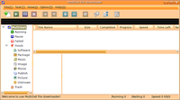
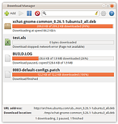
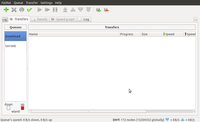
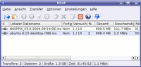
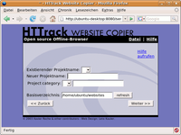

Download-Manager
Zum Verständnis dieses Artikels sind folgende Seiten hilfreich:
Diese Seite stellt einige Download-Manager vor, die erweiterte Möglichkeiten gegenüber den in Webbrowsern wie Firefox oder Konqueror integrierten Download-Funktionen bieten. Auch vollständige Webseiten (inklusive der Seiten hinter den Links) lassen sich komfortabel herunterladen.
GNOME¶
uGet¶
uGet  kann als Ersatz für das nicht mehr in den offiziellen Paketquellen enthaltene gwget dienen. Das Programm besitzt ebenfalls eine grafische Oberfläche und ein Tray-Icon. Es muss das Paket
kann als Ersatz für das nicht mehr in den offiziellen Paketquellen enthaltene gwget dienen. Das Programm besitzt ebenfalls eine grafische Oberfläche und ein Tray-Icon. Es muss das Paket
uget (universe)
 mit apturl
mit apturl
Paketliste zum Kopieren:
sudo apt-get install uget
sudo aptitude install uget
installiert werden [1]. Bei der Installation wird bei Ubuntu-Varianten mit einem Anwendungsmenü ein Starter unter "Internet -> uGet" angelegt.
MultiGet¶
|  |
| MultiGet |
MultiGet ist ein leicht zu bedienender Multiplattform-Downloadmanager. Die Namensähnlichkeit mit dem für Windows-Betriebssysteme erhältlichen Programm Flashget scheint beabsichtigt zu sein, denn die Oberfläche, die auf wxWidget basiert, und die Bedienung ähneln diesem stark. Es erlaubt mehrere gleichzeitige Transferaufträge und unterstützt die Protokolle SOCKS 4, 4a, 5, Proxy, FTP-Proxy und HTTP-Proxy. Ein zusätzliches Merkmal ist P2SP, das es ermöglicht, von verschiedenen Servern Dateien herunterzuladen, um diese schließlich zu einer einzigen Datei zu verschmelzen.
Folgendes Paket muss installiert werden:
multiget (universe)
mit apturl
Paketliste zum Kopieren:
sudo apt-get install multiget
sudo aptitude install multiget
Der Start erfolgt bei Ubuntu-Varianten mit einem Anwendungsmenü über "Internet -> Multiget".
aria¶
aria war ein Download-Manager für HTTP, HTTPS und FTP. Er unterstützte die typischen Funktionen wie das Pausieren der Transfers sowie rekursives Herunterladen. Die Entwicklung ist allerdings im Dezember 2002 eingestellt worden. Der Nachfolger ist aria2 (siehe unten).
Steadyflow¶
|  |
| Steadyflow |
Steadyflow ist ein einfach zu bedienender, in Vala entwickelter Download-Manager, der sich gut in GNOME 3 einpasst. Steadyflow benutzt ein Indikator-Applet und ist somit auch perfekt in die Desktop-Oberfläche Unity integriert. Unterstützte Protokolle sind HTTP, HTTPS, FTP und SMB. Das Programm kann für Ubuntu 14.04 über die Paketquellen installiert werden, für neuere Version von Ubuntu ist es darin nicht mehr enthalten:
steadyflow (universe)
mit apturl
Paketliste zum Kopieren:
sudo apt-get install steadyflow
sudo aptitude install steadyflow
KDE¶
|  |
| FatRat |
FatRat¶
FatRat ist ein Download-Manager für HTTP, HTTPS und FTP. Außerdem ist er auch ein BitTorrent-Client. Er unterstützt die typischen Funktionen wie das Pausieren des Transfervorgangs und lässt sich über folgendes Paket installieren:
fatrat (universe)
mit apturl
Paketliste zum Kopieren:
sudo apt-get install fatrat
sudo aptitude install fatrat
|  |
| KGet |
KGet¶
KGet ist der Download-Manager der Desktop-Umgebung KDE. Mit KGet lassen sich die Ladevorgänge komfortabel verwalten. Man kann sie beliebig starten, anhalten und wiederaufnehmen. Während des Transfers zeigt KGet auf Wunsch die geschätzte Restdauer des Vorgangs, wieviele Megabyte an Daten bereits übertragen wurden, und weitere Informationen an.
Browser¶
|  |
| WebHTTrack |
WebHTTrack¶
Mit WebHTTrack können ganze Webseiten heruntergeladen und in Projekten und Kategorien verwaltet werden. Dazu muss man nur das Paket
webhttrack (universe)
mit apturl
Paketliste zum Kopieren:
sudo apt-get install webhttrack
sudo aptitude install webhttrack
installieren [1]. Nach der Installation steht bei Ubuntu-Varianten mit einem Anwedungsmenü ein Starter unter "Internet -> WebHTTrack Website Copier" zur Verfügung.
Mit WebHTTrack ergeben sich folgende Möglichkeiten:
Automatische Website-Kopie
Website-Kopie mit Rückfrage
Zu allen Links verzweigen (Kopie mehrerer Sites)
Links auf den Seiten testen (Lesezeichen testen)
Spezielle Dateien laden
Unterbrochenen Kopiervorgang wiederaufnehmen
Vorhandene Kopie aktualisieren
Eine URL-Liste kann auch als Textdatei übergeben werden. In den Einstellungen und Kopieroptionen können verschiedene Optionen vorgenommen werden. Um z.B. Filterregeln zu bestimmen, kann man Platzhalter benutzen, die URLs oder verknüpfte Seiten ein- oder ausschließen:
+*.png +*.gif +*.jpg +*.css +*.js -ad.doubleclick.net/*
Java¶
JDownloader¶
JDownloader ist ein plattformunabhängiger Download-Manager inklusive grafischer Benutzeroberfläche, der auf das Laden von Dateien von One-Click-Hostern spezialisiert ist.
Es gibt auch einer neuere Version JDownloader 2, welcher allerdings noch in der Beta-Phase ist.
Terminal¶
wget¶
wget ist ein Programm, mit dem man direkt über die Kommandozeile Dateien von FTP- oder HTTP-Servern herunterladen kann. Das Programm ist sehr praktisch, wenn man in einem Shell-Skript Daten von Servern holen will, aber es ist auch ein sehr guter Download-Manager. Ladevorgänge können zu einem späteren Zeitpunkt an der abgebrochenen Stelle fortgeführt werden.
cURL¶
cURL ist ein universelles und flexibles Programm zum Senden und Empfangen von Daten über verschiedene (Internet-) Protokolle, inklusive HTTP und FTP. Damit eignet sich das Programm auch fürs Hunterladen von Dateien, zumal es auch eine Funktion zum fortsetzen abgebrochener Transfers gibt. Weiterhin ist es mittels cURL möglich, Dateien segmentweise herunterzuladen.
HTTPie¶
HTTPie ist ein einfach zu handhabendes und leistungsfähiges Programm für HTTP-Anfrage und der Ausgabe derer Antwort. Außerdem kann man mit HTTPie Dateien herunterladen, wobei das Programm auch die Wiederaufnahme abgebrochener Transfers unterstützt.
aria2¶
aria2 ist die Weiterentwicklung des eingestellten Download-Managers aria. Im Gegensatz zu aria unterstützt aria2 auch segmentiertes Herunterladen sowie das BitTorrent-Protokoll und Metalinks. Hervorzuheben ist die Möglichkeit, eine webbasierte Oberfläche zu nutzen.
pyLoad¶
pyLoad ist ein Download-Manager für "One-Click-Hoster". Als Clients stehen eine GUI, eine Kommandozeilenversion oder eine Weboberfläche zur Verfügung. Dank dieser Aufteilung ist es möglich, pyLoad nicht nur auf dem eigenem System, sondern auch auf einem Server oder sogar einem Router zu installieren.
Browser-Integration¶
Firefox 3¶
Mit der Einführung von Firefox 3.x besitzt das Programm einen integrierten Download-Manager. Über "Extras -> Downloads" besteht die Möglichkeit, Ladevorgänge zu stoppen (bzw. pausieren zu lassen) oder abgebrochene Transfers fortzusetzen. Firefox 3 zeigt weiterhin in der Statusleiste rechts unten an, ob noch Transfers ausstehen.
Firefox mit Download-Managern nutzen¶
Mit der Firefox-Erweiterung FlashGot  kann man verschiedene Download-Manager sehr komfortabel mit Firefox nutzen.
kann man verschiedene Download-Manager sehr komfortabel mit Firefox nutzen.
Firefox mit DownThemAll!¶
Eine weitere Firefox-Erweiterung ist DownThemAll! oder kurz dTa!. Es integriert sich in den Browser und ist ein komfortabler Download-Manager inklusive Transferbeschleunigung über mehrere parallele Verbindungen. Eine praktische Funktion ist "dTa! OneClick", die im Kontextmenü und in der Abfrage von Firefox die Möglichkeit bietet, Dateien ohne weitere Nachfrage in das Verzeichnis des vorangegangenen Transfers herunterzuladen. Dies ist z.B. bei vielen Einzeldateien hintereinander sehr nützlich. Die Option "In Warteschlange einreihen" bietet Vorteile bei Servern, die nur einen Transfervorgang zur selben Zeit zulassen.
Mit DownThemAll! kann man auch die Bandbreite für die Transfers beschränken - damit man z.B. nebenbei ungehindert surfen kann. Es empfiehlt sich, den dTa!-Manager in den Einstellungen unter "Oberfläche: Einträge im Menü Extras" anzeigen zu lassen: Durch das Öffnen des dTa!-Manager werden unterbrochene Ladevorgänge fortgesetzt - wichtig, wenn Firefox oder der Rechner abgestürzt sind.
 Übersichtsartikel
Übersichtsartikel- Erstellt mit Inyoka
-
 2004 – 2017 ubuntuusers.de • Einige Rechte vorbehalten
2004 – 2017 ubuntuusers.de • Einige Rechte vorbehalten
Lizenz • Kontakt • Datenschutz • Impressum • Serverstatus -
Serverhousing gespendet von